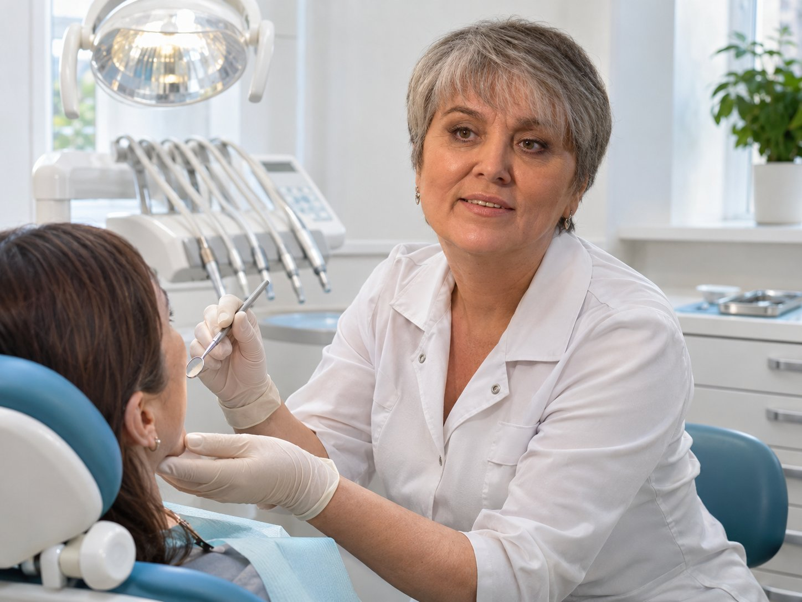
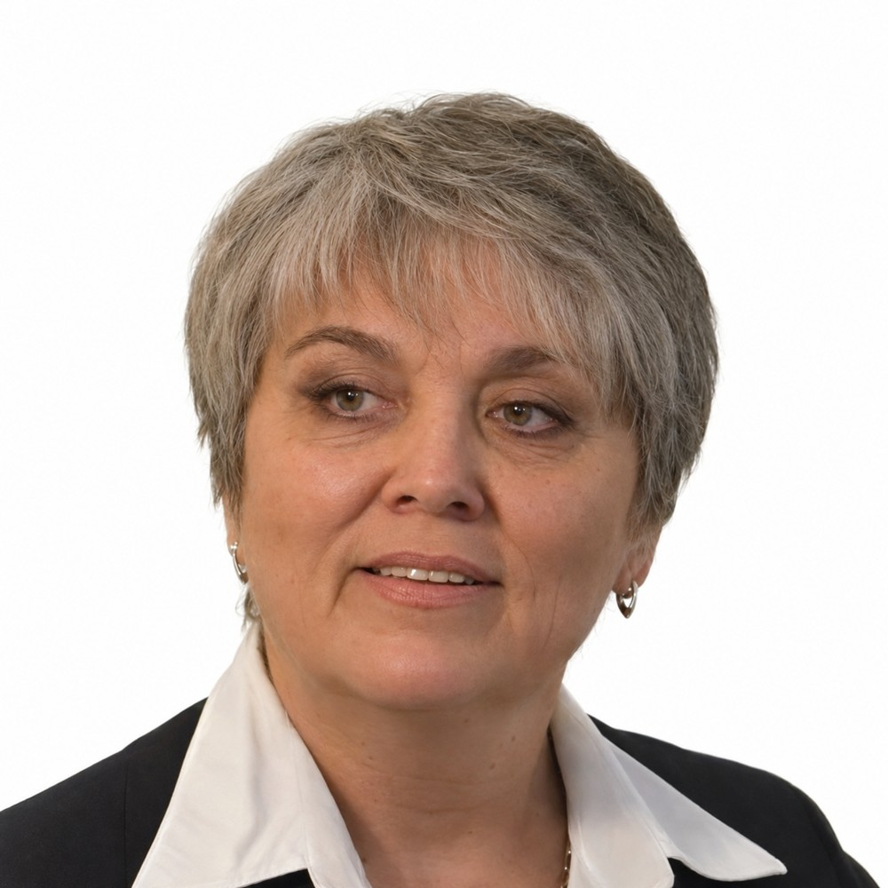

Здоровая улыбка — уверенность в себе
Современная стоматология в Уфе. Вас ведёт один врач, Алина Хамзина, от консультации до результата.

О клинике
Стоматология «Идеал» работает в Уфе более 15 лет. Мы работаем с качественными импортными композитами и даём гарантию на выполненные работы.
Наши принципы
Профессионализм Безопасность Эстетика Забота о пациентахНаправления нашей стоматологии
Комплексный подход к здоровью и красоте вашей улыбки.
Терапевтическая стоматология
Лечение кариеса и его осложнений качественными импортными композитами.Ортопедическая стоматология
Протезирование: восстановление зубов с учётом вашего случая.Гигиена и отбеливание
Профессиональная чистка и отбеливание зубов.Гнатология
[Опишите, с какими случаями работаете: прикус, жевательные мышцы, суставы.]
Хамзина Алина Феликсовна
Врач-стоматолог, гнатолог. Стаж 40 лет. В клинике «Идеал» принимает с 2000 года. Регулярно проходит обучение: последние курсы по ортодонтии без брекетов и композитным винирам.
Наши работы
Прайс-лист
Прозрачные цены. Точную стоимость лечения врач называет после осмотра, до начала работы.
Что говорят пациенты
Рейтинг врача на ProDoctorov: 4.4, 7 отзывов. Прочитать их можно на странице врача.Частые вопросы
Сколько стоит лечение и можно ли платить частями?
Точную цену называю после осмотра, до начала лечения. [Условия рассрочки, если есть.]
Лечите ли вы детей?
[Ответьте: с какого возраста принимаете.]
Есть ли гарантия на работу?
Да, на выполненные работы мы даём гарантию 1 год.
Лечить будете вы сами или помощник?
Все этапы лечения провожу сама.
Что делать, если болит зуб прямо сейчас?
Позвоните по телефону +7 (993) 040-45-46. Принимаем с понедельника по пятницу с 09:00 до 20:00.
Документы
Лицензия, правила записи, договор и нормативные акты. Всё, что пациент вправе знать до приёма.
Документы организации
Для пациентов
Руководящие документы
Запишитесь на приём
Принимаем пн.–пт. с 09:00 до 20:00, суббота и воскресенье выходные. Позвоните, и мы подберём время.